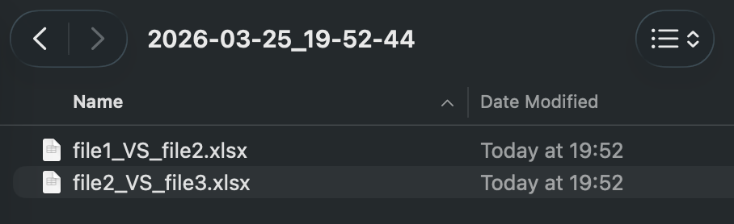

Compare Excel Files and Instantly See the Differences
Compare spreadsheet versions and quickly identify changed cells, values, and worksheet differences.
Manually comparing Excel files is slow, repetitive, and easy to get wrong — especially when spreadsheets contain many tabs, formulas, or data updates.
Download Demo
Try the Excel file comparison tool on your own spreadsheets.
MacOS demo Windows demoRuns locally. No installation. No cloud.
No data leaves your computer.
Why Compare Excel Files?
When spreadsheet files are updated repeatedly, it can be difficult to see what changed between versions. Small edits can be missed easily, especially when working with large workbooks, shared files, or frequent revisions.
A dedicated Excel comparison workflow helps you review differences more quickly and with less manual effort.
What You Can Compare
- Changed cell values
- Differences between spreadsheet versions
- Updated worksheet content
- Modified business data across files
When Excel File Comparison Is Useful
- Comparing spreadsheet versions from different dates
- Reviewing updates before approval
- Checking external edits or submitted revisions
- Finding differences without manual line-by-line review
Review Spreadsheet Differences More Efficiently
Instead of manually checking worksheets line by line, Excel file comparison helps you focus directly on the differences between versions. This makes spreadsheet review faster, clearer, and less error-prone.
Comparison completed successfully

Comparison results saved in the output folder

Specific comparison results between spreadsheet files

© 2026 Robert Krecmer – ExcelCompareTool